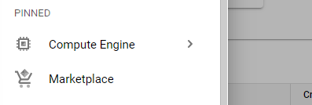
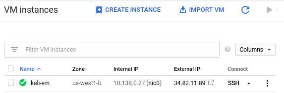
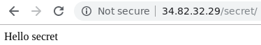
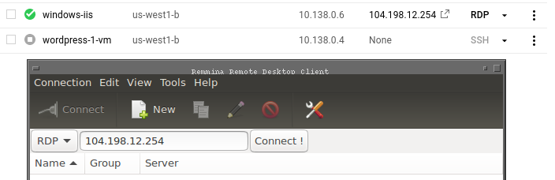
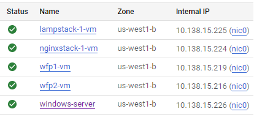

Automated tools are used to aid in the auditing, discovery, and exploitation of vulnerable web applications. In this lab, we will practice using some of the common tools that professionals use to aid in the process of discovering bugs in sites.
You will use Google Cloud Platform's Compute Engine to deploy a number of vulnerable servers and docker containers. Then, using a Kali VM, you will point automated tools at these vulnerable services to identify specific issues with them. We must set up our own vulnerable infrastructure since many of these tools can not be used on external web applications without prior consent. It is important for these tasks to be confined to private, internal IP addresses on your cloud project.
For these exercises, you only need to provide what is asked in the description. (There is no need to describe a vulnerability, the exploit, and prevention techniques).
Begin by instantiating a VM using a Kali VM image. Log into your Google Cloud Platform account and go to your project's console.
From the dropdown menu, scroll down to locate "Marketplace" and "Compute Engine" and pin them to the top for easy access:

cs495-websecurity and open it. cs495-websecurity (famous-empire-181720)kali-rolling-latest image Keep track of both the external and internal IP address of each instance. We will be using the internal IP address for the attacks, but will need to connect via the external IP addresses initially.
kali_external_IP, kali_internal_IP
Finally, ssh into your Kali VM instance to ensure you can access it.
From the web console, launch Cloud Shell. Within it, run the command below to find the most recent version of the Kali VM image on the course's GCP project.
gcloud compute images list \
--project famous-empire-181720 --no-standard-imagesMake a note of the name of the Kali VM image, then fill in the gcloud command below and launch a VM using the image.
gcloud compute instances create kali-vm \
--machine-type e2-micro --zone us-west1-b \
--image-project famous-empire-181720 --image kali-rolling-latestPerform the command below to ssh into the VM instance after it comes up to ensure you can access it.
gcloud compute ssh kali-vm --zone=us-west1-bWe will be performing reconnaissance tasks on a variety of servers with the VM created in the previous step. To do so, we'll use Google Marketplace to set our server deployments on Compute Engine VMs automatically. Marketplace solutions leverage GCP's "Deployment Manager" for launching instances. After launch, you can remove the deployments from the "Deployment Manager" in the console.
You will bring up the following deployments in Marketplace.
Go to "Compute Engine" to find the External IP address of each VM that is running a server and visit the address in a web browser.
ssh into the nginx and lamp stack instances via the web console and install the lsof tool in each
sudo apt install lsofThe lsof command can list all of the open file descriptors (e.g. files, network connections, listening sockets) that are currently open on the system and the processes that have them open. It is a useful utility for seeing what is being run on the server. We are interested in processes that have a TCP port on the server open and in a "LISTEN" state. Web servers typically "LISTEN" on port 80 (*:http) to receive incoming connections from web browsers. On each VM, perform the following command to find the name of the command that has the web server port in a LISTEN state.
sudo lsof +c 10 -i | egrep "(LISTEN|COMMAND)"Each web server is launched with either a pointer to a configuration file or a configuration directory that specifies how the web server has been set up to serve content. Use the command name from the prior command and perform the following process listing command via ps to identify the location of the configuration file or directory.
sudo ps -ef | egrep <COMMAND_NAME>Investigate the configuration of the web server to identify the directory and file that serves the default landing page from the previous step for each VM. Look for where the DocumentRoot directory or the "location /" path for the server is specified.
Alternatively, one can perform a "find" command to locate files that might contain the landing page of each server. The command below will search the current directory (and all of its subdirectories) for files that begin with "index".
sudo find . -name "index*"After finding the root directory on each web server, change into the directory.
cd <path_to_document_root>Then, create directories named secret, files, admin
sudo mkdir secret files adminNext, create index.html files in each directory using the following bash command
for i in secret files admin
do
sudo bash -c "echo 'Hello $i' > $i/index.html"
donePerform an ls -l on the web server files to determine the user and group ownership on the files being served. Then, change the ownership and group of the directories and files created to match. Note that, files must be readable and directories must be readable and executable by the web server in order for them to be served. Useful commands for recursively (-R) changing the user and group settings for each file in the current directory and for recursively setting files to be group/other readable along with directories to be group/other readable and executable are below:
sudo chown -R bitnami:bitnami .
sudo chmod -R go+rX . Visit the "secret" directory in each of the VMs using a web browser pointed to the External IP address to ensure you've created the files and directories correctly.

Set-up a web server on a Windows Server VM on Google Compute Engine.
Performing the QuickStart to create the server instance in the link below. Ensure that the server is brought up in the us-west1-b zone and has HTTP enabled.
When you attempt to connect to the VM instance, you may skip installation of the Chrome Remote Desktop service.
Launch Cloud Shell from the web console. Then, create the Windows VM with the gcloud command below:
gcloud compute instances create windows-server \
--zone=us-west1-b \
--machine-type=e2-medium \
--image-project windows-cloud --image-family windows-2019 \
--tags=http-serverWe'll need to reset the account credentials for our OdinId. Replace your OdinId in the reset password command below to obtain your Windows password.
gcloud compute reset-windows-password windows-server \
--zone=us-west1-b --user=<OdinId>Make a note of this password for use in connecting to your VM.
For tools for connecting to the VM, you will need to have a Microsoft Remote Desktop client on your machine. Clients are available on most platforms.
remmina or xfreerdp. Enter the external IP address of your Windows instance. 
After successfully connecting to the Windows server, install a web server on it. (Instructions taken from this link)
Search for the PowerShell application either directly on the Windows taskbar or by clicking on the search icon on the taskbar. In the search results, under Apps, locate "Windows PowerShell" and right-click the icon. Navigate its options to find "Run as administrator" and click on it.
Within PowerShell, run the following commands to install IIS.
import-module servermanager add-windowsfeature web-server -includeallsubfeature
Note that if the web server installation hangs, interrupt the command via Ctrl+c and try again.
Finally, use the following command to create a landing page on the web server in its root directory (C:\inetpub\wwwroot)
echo '<!doctype html><html><body><h1>Hello World!</h1></body></html>' > C:\inetpub\wwwroot\index.htmlPoint your web browser to the external IP address of the instance and ensure you see the server's landing page you've just created.
Change into the webroot folder and then create directories named secret, files, and admin using individual mkdir commands.
cd C:\inetpub\wwwroot
mkdir admin
mkdir secret
mkdir filesindex.html file you created initially into each of the directoriescp .\index.html admin cp .\index.html secret cp .\index.html files
index.html file into them as wellFinally, we will be using the tools that we have set up on your course WFP VMs. Visit the Compute Engine console and start these VMs up.
It is important that your accesses in these labs use the Internal IP addresses of each server.
Internal IP addresses. 